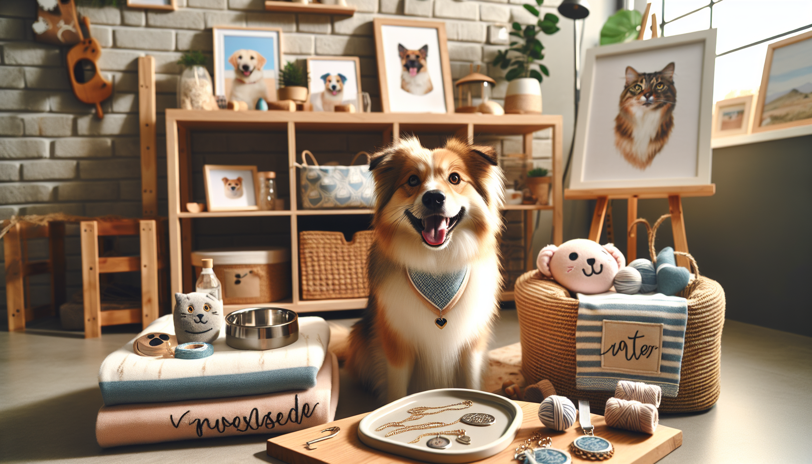

If you love spoiling your pets or finding memorable gifts for fellow animal lovers, Etsy continues to be one of the best places to discover unique, handmade, and personalized treasures. This year, pet owners are shopping with both heart and style in mind. They want products that feel special, look beautiful in the home, and celebrate the personalities of the pets they adore.
From custom keepsakes to practical everyday accessories with a personal touch, the trending pet products on Etsy this year reflect a growing desire for meaningful purchases. Shoppers are looking beyond basic pet supplies and choosing items that feel thoughtful, giftable, and one-of-a-kind. Whether you are a dog lover searching for a new favorite accessory or a gift shopper hoping to surprise a pet parent, these trends are worth watching.
Let’s take a closer look at the Etsy pet products making tails wag this year.
Personalization continues to be one of the biggest reasons shoppers turn to Etsy, and pet products are no exception. This year, custom pet accessories are especially popular because they combine function, style, and sentiment. Pet owners love items that make their furry friends stand out while also reflecting their unique personality.
Some of the most in-demand personalized pet products include custom name bandanas, engraved ID tags, monogrammed collars, and personalized feeding mats. These products are especially appealing because they feel tailor-made rather than mass-produced. They are practical enough for everyday use, but charming enough to feel special.
For dog lovers, a personalized bandana has become a go-to accessory for birthdays, adoption anniversaries, holidays, and everyday photo moments. Custom tags are also trending because they add a polished touch while helping keep pets safe. Gift shoppers are drawn to these items because they feel thoughtful and easy to customize for any pet parent.
These products are trending because they turn ordinary pet essentials into memorable keepsakes.
Pet parents do not just love their animals, they celebrate them as family. That is why custom pet portraits and keepsake gifts are among the top Etsy pet trends this year. These items offer a meaningful way to honor a beloved dog or cat while adding a personal touch to home decor.
Artists and makers on Etsy are creating beautiful portrait prints, watercolor illustrations, digital artwork, embroidered hoops, and even pet-themed ornaments. Many shoppers are ordering these items to commemorate a new puppy, celebrate a rescue adoption, or remember a cherished pet. They also make incredibly thoughtful gifts for birthdays, holidays, and housewarmings.
What makes this trend so strong is the emotional connection behind it. People are not just buying decor. They are buying a reminder of a companion who brings joy every day. For gift shoppers, custom pet portraits are a standout choice because they feel personal, heartfelt, and unexpected.
This year, portrait styles are also becoming more diverse. Minimalist line art, colorful pop-art pet illustrations, vintage-inspired prints, and modern neutral-toned portraits are all trending. That means there is something to match every home aesthetic.
Another major trend on Etsy this year is the rise of elevated everyday pet essentials. Pet owners want products that are useful, durable, and visually appealing. Instead of settling for generic supplies, they are choosing handmade or thoughtfully designed items that blend seamlessly into their homes.
Popular products in this category include modern pet bowls, handmade toy baskets, washable pet blankets, leash holders, treat jars, and storage solutions for pet gear. These items are especially appealing to shoppers who care about both function and design. A pet bowl can now be part of your decor. A toy bin can look just as stylish as the rest of your living room.
Dog lovers in particular are embracing products that make everyday routines feel a little more special. A beautiful treat jar on the counter or a custom leash hook by the door adds personality to a space while keeping things organized. Etsy sellers are meeting this demand with creative designs, high-quality materials, and customization options that big-box stores often cannot match.
This trend reflects a bigger lifestyle shift: pet products are becoming part of home styling, not just pet care.
Pet fashion is having another big moment on Etsy, especially when it comes to handmade apparel and seasonal accessories. While comfort is still key, shoppers are embracing adorable pieces that help pets look festive, photogenic, and on-trend throughout the year.
Bandanas remain one of the most popular categories, but this year shoppers are also gravitating toward bow ties, flower collars, birthday hats, holiday-themed accessories, and cozy pet sweaters. These products are ideal for social media photos, family gatherings, special events, and gifting moments. They are also easy for Etsy makers to personalize, which makes them even more attractive to buyers.
Seasonal shopping is a huge driver here. In spring, floral accessories and pastel bandanas are popular. Summer brings patriotic styles and vacation-themed pet gear. Fall is full of pumpkin prints and plaid, while winter highlights holiday bandanas, festive bows, and cozy knitwear. This steady cycle keeps seasonal pet products trending all year long.
For gift shoppers, handmade pet apparel is a fun and affordable way to give something personal without feeling overly complicated. It is thoughtful, cheerful, and often irresistibly cute.
Many Etsy shoppers are choosing products with more intention this year, and that includes pet items. Eco-friendly, small-batch, and handmade products are gaining popularity as pet owners become more mindful about what they buy and who they buy from.
Reusable pet accessories, organic materials, natural fiber toys, and sustainably made pet care products are all attracting attention. Shoppers appreciate knowing that their purchase supports an independent maker while also aligning with their values. Etsy is a natural fit for this trend because many sellers are transparent about materials, production methods, and packaging.
Examples of trending eco-conscious pet products include cotton bandanas, natural chew toys, handmade snuffle mats, reusable grooming accessories, and pet gifts packaged in recyclable materials. Even when shoppers are mainly motivated by style or personalization, sustainability often becomes an added bonus that helps them feel even better about their purchase.
This trend is especially relevant for younger pet owners and gift shoppers who want their purchases to feel both meaningful and responsible.
One of the biggest reasons pet products are trending on Etsy this year is simple: they make amazing gifts. More shoppers are searching for gift-ready pet items that feel personal, charming, and easy to order for birthdays, holidays, new pet adoptions, and pet parent celebrations.
Giftable pet products often combine personalization with attractive presentation. Think custom dog bandanas wrapped with care, engraved tags in beautiful packaging, or pet portrait prints ready for framing. Etsy shoppers love products that arrive feeling special right out of the box.
Pet-themed gifts are also expanding beyond the pet alone. This year, products that celebrate the bond between pets and their people are especially popular. Matching pet-and-owner accessories, custom mugs with pet illustrations, and home decor inspired by a beloved dog or cat are all getting plenty of attention.
If you are shopping for a dog lover and do not know what to buy, Etsy makes it easy to find something that feels unique without being overly complicated. Personalized pet gifts strike the perfect balance between practical and sentimental, which is why they continue to trend year after year.
With so many creative options available, choosing the right Etsy pet product can feel overwhelming in the best possible way. The key is to focus on what matters most to the recipient and their pet. If you are shopping for your own dog, think about your daily routine, your style, and the little details that would make life feel more joyful. If you are buying a gift, consider what would feel most personal and useful.
Here are a few quick tips for shopping smart:
The best trending products are not just popular. They are the ones that create a happy moment, solve a real need, or help someone celebrate the pet they love.
The trending pet products on Etsy this year show just how much pet owners value creativity, quality, and connection. From personalized accessories and custom portraits to stylish home essentials and gift-ready finds, today’s most popular pet products are all about making everyday life with pets feel more meaningful.
For pet owners, these products add personality and joy to daily routines. For dog lovers, they offer fun ways to celebrate a furry best friend. And for gift shoppers, they make it easy to choose something thoughtful, memorable, and full of heart.
If you are ready to discover charming, personalized pieces that pet lovers will truly adore, now is the perfect time to explore what handmade shopping has to offer.
Shop personalized pet products at SnoutAndAbout on Etsy.